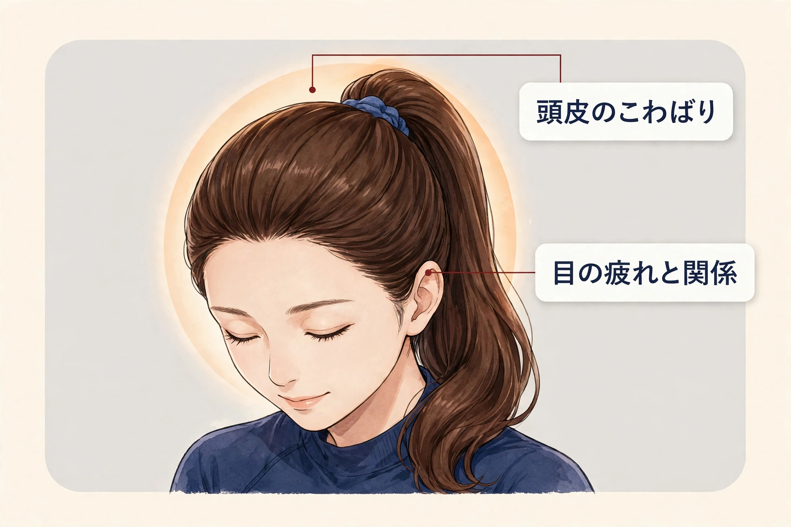

頭皮のこわばり
美容整体ステラ・ポラリス東三国｜大阪市淀川区東三国・東三国駅徒歩5分・女性向け

ガチガチの頭皮をゆるめて、頭全体が軽く感じる状態へ
頭皮を指で動かそうとしてもほとんど動かない、頭全体が帽子をかぶったように重い——頭皮のこわばりは、目の疲れや首・肩のこわばりとつながって現れることが多いお悩みです。頭には薄い筋肉と腱膜があり、長時間の画面作業や緊張、噛みしめなどでこわばると、頭の重さや顔の疲れた印象にも関わると言われています。このページでは、頭皮がこわばる仕組みと、頭まわりをゆるめて頭が軽く感じられる状態を目指す当サロンでのケア、ご自宅でできるセルフケアをご案内します。まずは下のチェックで、ご自身の状態を確かめてみてください。自分では見えない場所だからこそ、気づかないうちに緊張がたまっていることも少なくありません。
ご予約はこちら（Coubic）こんなお悩みありませんか
- 頭皮を指でつまんでも、ほとんど動かない感じがする
- 頭全体が重く、帽子をかぶっているような圧迫感がある
- 夕方になると、目の疲れと一緒に頭も重くなる
- こめかみや側頭部を押すと、痛気持ちよく感じる
- 首や肩のこわばりが強い日は、頭の重さも増す気がする
- 気づくと歯を噛みしめていて、頭の横が張る感じがする
- 髪を結ぶと、頭皮が引っ張られて疲れる感じがする
当てはまる項目が多いほど、頭まわりの筋肉の緊張と、目や首・肩からの負担が重なっている目安とされています。頭皮のこわばりは、頭だけでなく全身の緊張の現れでもあります。次のセルフチェックで、頭皮の動きの傾向を確かめてみましょう。
簡単セルフチェック（頭皮の動きチェック）
椅子に座って、頭皮の動かしやすさを確かめる簡単な方法です。
- 両手の指の腹を頭皮に当て、頭頂部・側頭部・後頭部の順に、小さな円を描くように動かします。
- 頭皮が頭蓋骨の上ですべるように動くか、場所によって動きに差がないかを確認します。
- ほとんど動かない場所がある、押すと強い張りを感じる場合は、頭まわりの筋肉がこわばっている目安と言われています。
※これは診断ではありません。ご自身の状態の傾向を知る目安としてお使いください。
頭皮のこわばりの原因と仕組み
頭を覆う筋肉と腱膜
頭には、額から頭頂、後頭部へ続く薄い筋肉と、それをつなぐ腱膜があります。表情を動かしたり、頭を支えたりする中で少しずつ緊張がたまり、頭皮全体が硬く張った状態になりやすいと言われています。図1のように、頭皮のこわばりは頭頂部だけでなく、こめかみや後頭部まで広がって現れるのが特徴です。頭皮の状態は、その日の緊張のたまり具合を映す鏡でもあります。

図1 頭まわりの筋肉が緊張して頭皮が張った状態と、ゆるんで動きやすくなった状態のイメージ。体の状態には個人差があります。施術では、この仕組みを踏まえてケアを組み立てます。
目の疲れとのつながり
画面を長く見る生活では、目のまわりの筋肉が働き続け、額やこめかみの緊張につながります。額の緊張は頭頂部へ、こめかみの緊張は側頭部へと続き、頭全体の重さとして感じやすくなります。目の疲れと頭の重さがセットで現れる方は、このつながりの影響が大きい目安になります。目を休ませる習慣は、頭の重さ対策にもつながります。
噛みしめと側頭部の張り
歯を噛みしめるクセは、あごの筋肉だけでなく、こめかみから頭の横に広がる筋肉も働かせ続けます。緊張する場面や集中する作業が多い方ほど、側頭部が張って頭が締めつけられるように感じやすくなります。あごの力みをゆるめることは、頭皮のこわばりをほぐすうえでも大切な視点です。あごの力を抜く意識が、頭まわりの緊張を減らす助けになります。
巡りと冷えの影響
頭皮は、顔や首とつながる巡りの通り道でもあります。首・肩のこわばりが強いと頭への巡りが滞りやすく、頭皮の硬さや重さが抜けにくくなると言われています。寒い時期に頭の重さを感じやすい方は、冷えと巡りの影響も重なっている目安になります。頭皮だけでなく、首・肩まで含めてゆるめることが土台になります。頭だけでなく首・肩まで含めてゆるめることが、軽さを取り戻す土台になります。
セルフケアで足りる場合・サロンケアが向く場合
頭の重さが軽く、頭皮をほぐしたり温めたりすると楽に感じる日が多い場合は、まずご自宅でのセルフケアを続けて様子を見る方法があります。一方で、頭皮がほとんど動かないほど固い、目の疲れや首・肩のこわばりもセットで強い、噛みしめのクセを自覚しているという場合は、サロンでのケアが向いている目安になります。サロンでは、頭まわりから首・肩までを丁寧にゆるめ、施術後に「頭が軽い」「目が開きやすい」と感じやすい状態を目指します。どちらが正解というものではなく、今の状態に合わせて選ぶことが大切です。
当サロンでのケア
当サロンの頭皮ケアは、「頭皮がゆるんで、頭全体が軽く感じる状態」を目指す組み立てです。まず頭皮の動きと首・肩の張り、噛みしめの様子を一緒に確認し、部位と目的に合わせて3つの手技を組み合わせます。
美容整体：頭の位置と背骨のラインを整え、首まわりにかかる負担を減らす姿勢の土台をつくることを目的に。頭への巡りが助けられる条件を整えます。
アロマオイルマッサージ：首すじから肩、背中の上部をオイルでゆるめ、巡りが流れやすい状態を目指します。頭まわりのケアと組み合わせることで、ゆるむ感覚が深まります。
もみほぐし：頭皮全体を指の腹で丁寧にほぐし、こめかみや後頭部の付け根など張りやすいポイントをゆるめて、頭の重さが抜けていく感覚を目指して進めます。
ケアを通して目指すのは、こんな変化です。
- 頭皮が動きやすくなり、頭全体が軽く感じる状態へ
- こめかみや後頭部の張りがやわらぐ感覚へ
- 目のまわりまで、すっきり開きやすい状態へ
- 噛みしめのこわばりがゆるみ、あごが軽く感じる状態へ
- 首・肩の緊張がゆるみ、頭への巡りが助けられる土台へ
施術の仕上げには、ご自宅で続けやすい頭皮のほぐし方や、画面作業の合間にできる首のリセット方法もお伝えします。頭の軽さを感じる時間を持つことが、緊張のクセを見直すきっかけになります。強さは途中でも調整できますので、遠慮なくお声がけください。

施術の流れ
ご来店後、気になる部位やお悩み、ご希望の強さなどをうかがいます。完全個室のため、周りを気にせずお話しいただけます。
頭皮の動きや首の張り、噛みしめの様子などを一緒に確認し、その日の状態に合わせた施術の進め方をご案内します。気になる点があれば、その場で一緒に確認します。
美容整体を中心に、ご希望に応じてアロマオイルマッサージ、もみほぐしを組み合わせて進めます。強さは途中でも調整できます。
施術後の状態を確認し、ご自宅で続けやすいセルフケアのポイントをお伝えします。次回の目安についても、ご希望があればご案内します。
料金
| コース | 通常価格 | キャンペーン価格（12/25まで） |
|---|---|---|
| 80分 | 8,000円 | 3,000円 |
| 100分 | 10,000円 | 4,000円 |
| 120分 | 12,000円 | 5,000円 |
クリスマスキャンペーンは12月25日まで、ご新規様もリピーターの方も対象です。施術内容は当日の状態とご希望に合わせて組み立てます。
ご自宅でできるセルフケア
- 頭皮マッサージ：両手の指の腹で頭皮全体を小さな円を描くように動かします。1か所5秒を目安に、頭頂部から後頭部までまんべんなく行ってください。
- 耳回しほぐし：耳全体を指でつまみ、前回し・後回しを各10回。頭の横の張りをゆるめるつもりで、やさしく行います。
- こめかみの指圧：こめかみに指の腹を当て、ゆっくり円を描くように10回ほぐします。目の疲れを感じる日の習慣におすすめです。
- 首の付け根を温める：蒸しタオルを首の後ろに当てて5分ほど温めます。頭への巡りを助け、頭皮のほぐしと相性のよい習慣です。
ご自宅でのケアに：セルフケア資料ライブラリ（無料）
このお悩みに合わせたセルフケアの考え方を、無料の資料ライブラリでご紹介しています。
セルフケア資料ライブラリを開く →
受診の目安
頭皮の痛みや腫れ、できものが広がる場合や、今までにない頭の痛みを伴う場合は、施術の前に医療機関への受診をおすすめします。円形に髪が抜けるなどの変化に気づいた場合も、まずは医療機関でご相談ください。ご不安な点があるときは、無理に施術を進めず、受診を優先してください。
よくある質問
Q. 初めてでも大丈夫ですか？
はい。当サロンは完全予約制・完全個室で、1日3組までのご案内です。最初にカウンセリングで頭皮の状態や首・肩の張りをうかがい、無理のない内容から始めます。施術の前後で「頭が軽くなった」「頭皮が動く感じがする」といった感覚の違いを一緒に確認しながら進めますので、初めての方も安心してご利用いただけます。
Q. 頭皮の施術は痛いですか？
頭皮は状態に合わせて、指の腹で丁寧にほぐします。張りの強いポイントは少しずつゆるめていきますので、強い痛みをがまんしていただく進め方はしません。感じ方には個人差がありますので、施術中も遠慮なくお声がけください。施術中に力加減が気になるときは、その場でお声がけいただければすぐに調整します。
Q. コースはどう選べばいいですか？
80分・100分・120分のコースがあり、ケアしたい部位の広さやお時間のご都合に合わせて選べます。頭まわりに加えて、首・肩・背中までゆっくりほぐしたい方には、100分が選ばれることが多いコースです。迷われる場合は、ご予約の際にお気軽にご相談ください。
Q. 場所と予約方法を教えてください。
大阪市淀川区東三国、東三国駅から徒歩5分です。完全予約制のため、予約サイト（Coubic）またはLINE公式アカウントからご予約をお願いしています。
Q. 男性も受けられますか？
当サロンは女性向けのため、男性の方は、同じ東三国の男性専用整体院「北辰堂」をご案内しています。
施術者について
平賀建人（施術歴30年）
鍼灸師・登録販売者・アロマセラピスト・パーソナルトレーナーの資格を持ち、美容整体を中心に、アロマオイルマッサージ、もみほぐしを、その日の状態とご希望に合わせて組み合わせて施術します。このページの内容は、施術者の知識と経験をもとに作成しています。

料金・ご予約
ご新規様もリピーターの方も 12/25まで
80分 3,000円／100分 4,000円／120分 5,000円
通常価格は80分8,000円／100分10,000円／120分12,000円です。施術内容はご希望に合わせて組み立てます。
営業時間：月〜土 17:00〜23:00／日 10:00〜23:00（完全予約制）｜電話：080-2468-3086
大阪府大阪市淀川区東三国2丁目25番4号101（東三国駅徒歩5分）
専門解説で詳しく見る
仕組みから詳しく知りたい方は、専門解説シリーズのこちらの記事もあわせてご覧ください。